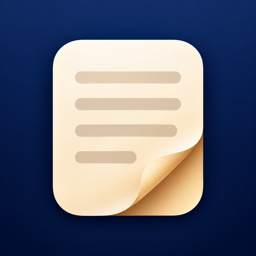

Textra
TXT·EPUB 소설 뷰어 · TXT & EPUB Reader
폴더째 읽는 텍스트 소설·전자책
- 파일 앱의 아이폰·iCloud Drive 폴더를 등록하면 안의 txt, epub, zip, 7z가 바로 보입니다. 옮기거나 복사하지 않습니다.
- zip·7z는 풀지 않고 폴더처럼 열고, 읽던 권과 위치를 기억합니다.
- 책장 넘김·슬라이드·세로 스크롤, 다음 권 바로 열기, 쪽 번호.
- EUC-KR(CP949)·UTF-8 자동 인식, 무료 글꼴과 내 글꼴, 7가지 테마와 다크 모드.
- 어떤 데이터도 수집하지 않습니다.
지원 · 문의
사용 중 문제가 있거나 제안이 있으면 메일로 알려 주세요: meaneast.photo@gmail.com
Read your novel folders like a paper book
- Add a folder from On My iPhone or iCloud Drive and every txt, epub, zip and 7z inside shows up. Nothing is moved or copied.
- Open zip and 7z archives like folders; Textra remembers the volume and page you were on.
- Page curl, slide or vertical scroll, next-volume opening and page numbers.
- Detects UTF-8/16, Korean, Japanese and Chinese legacy encodings. Free fonts, your own fonts, seven themes and dark mode.
- Collects no data at all.
Support
Questions or suggestions: meaneast.photo@gmail.com
フォルダごと読める小説・電子書籍リーダー
- 「このiPhone内」やiCloud Driveのフォルダを登録すると、txt・epub・zip・7zがすぐに一覧に並びます。移動やコピーは不要です。
- zip・7zは展開せずにフォルダのように開き、読んでいた巻と位置を覚えています。
- ページめくり・スライド・縦スクロール、次の巻へすぐ移動、ページ番号表示。
- Shift_JISなどの文字コードを自動判別。無料フォントや手持ちのフォント、7つのテーマとダークモード。
- データは一切収集しません。
サポート
ご質問・ご要望：meaneast.photo@gmail.com
整个文件夹直接阅读的小说·电子书阅读器
- 添加"我的 iPhone"或 iCloud 云盘中的文件夹，其中的 txt、epub、zip、7z 立即显示，无需移动或复制。
- zip、7z 无需解压即可像文件夹一样打开，并记住读到的卷和位置。
- 仿真翻页、滑动、竖向滚动，自动打开下一卷，显示页码。
- 自动识别 GB18030、Big5 等编码；免费字体与自定义字体，7 种主题和深色模式。
- 不收集任何数据。